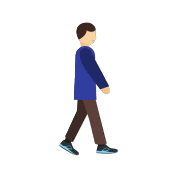
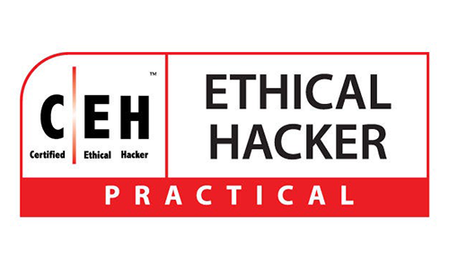
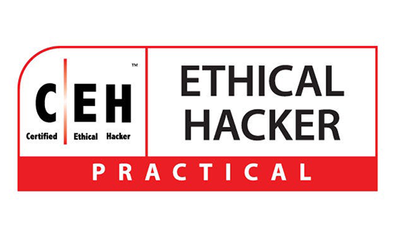

Artikel ini berisi hal favorit, hobby, dan cita-cita saya.
Hal Favorit
Hobby
| Hobby |
Penjelasan |
|  |
Salah satu hobby saya adalah jalan-jalan.
Saya suka jalan-jalan di sekitar komplek perumahan saya.
Aktivitas ini menurut saya menyenangkan sekaligus menenangkan karena bisa melihat pemandangan sekitar, menghirup udara segar, dan mendengarkan suara alam.
Saya biasanya jalan-jalan di pagi hari sekitar pukul 05:45 hingga pukul 06:30 saat hari libur.
|
  |
Saya juga suka bermain game, terutama game Mobile Legends dan game yang ada di Steam.
Keduanya memiliki keunikan dan keseruan tersendiri.
Saya akan menjelaskan sedikit tentang kedua platform game tersebut :
About ML
Mobile Legends adalah game MOBA
kompetitif 5 versus 5 dengan berbagai
macam karakter/hero di dalam gamenya.
Saya sudah bermain sejak akhir tahun 2018.
Kenal game ini dari teman.
Game itu masih terus saya mainkan sampai saat ini dengan akun yang selalu berganti.
Saya juga banyak mendapat teman online dari game ini.
Dari awal menginstall ML, saya bermain hanya untuk have fun.
Namun sekarang sudah jarang main.
About Steam
Steam adalah platform distribusi digital untuk game PC.
Saya pertama kali mengenal Steam di tahun 2020 saat era Covid.
Di saat itu saya hanya menjajal beberapa game yang ada, lalu sudah tidak memakainya lagi karena bosan.
Saat ini saya mulai aktif kembali menggunakan akun baru saya di Steam untuk bermain game yang memiliki genre action dan story.
Beberapa game yang ada di akun Steam saya diantaranya Alan Wake, Resident Evil 6, Life is Strange 1 & 2, The Walking Dead, Tomb Raider, dll.
Alasan saya memainkan game tersebut karena grafiknya yang bagus, action yang menantang, dan story/cerita yang dibawakan cukup menarik.
|
Cita-cita
| CYBER SECURITY |
Keamanan siber adalah praktik melindungi sistem, jaringan, dan data komputer
dari serangan digital, kerusakan, atau akses tidak sah. Keamanan siber melibatkan
penggunaan teknologi, proses, dan kontrol untuk melindungi dari ancaman seperti malware, peretasan, dan phishing.
Bertujuan untuk memastikan kerahasiaan, integritas, dan ketersediaan informasi. |
Cyber Security memiliki beberapa cabang :
- Network Security → Melindungi jaringan komputer dari serangan atau penyusup.
- Information Security → Menjaga kerahasiaan dan keamanan data penting.
- Application Security → Mengamankan aplikasi dari bug atau celah serangan.
- Penetration Tester → Testing keamanan sistem kayak hacker tapi buat tujuan baik.
- Ethical Hacking → Hacking yang legal dan beretika untuk bantu perbaiki sistem.
- Digital Forensics → Mencariari dan analisis bukti digital setelah serangan terjadi.
- Cryptography → Mengacak data agar hanya orang tertentu yang bisa baca isinya.
|
Saya sendiri memilih cabang Penetration Tester dan berencana untuk mengejar karir di bidang Cyber Security dengan langkah-langkah berikut :
- Pendidikan : Saya akan melanjutkan pendidikan di bidang teknologi informasi atau keamanan siber untuk memperoleh pengetahuan dan keterampilan yang diperlukan.
- Sertifikasi : Saya akan mengikuti sertifikasi yang relevan seperti Certified Information Systems Security Professional (CISSP), Certified Ethical Hacker (CEH), dan Capture The Flag (CTF) untuk meningkatkan kredibilitas saya di industri.
- Pengalaman Praktis : Saya akan mencari peluang magang atau proyek-proyek praktis untuk mendapatkan pengalaman langsung dalam menghadapi tantangan keamanan siber.
     
|
Saya tertarik dengan bidang Cyber Security karena beberapa alasan :
- Minat Teknologi : Saya memiliki minat yang kuat terhadap teknologi dan keamanan digital.
Cyber Security memungkinkan saya untuk menjelajahi aspek-aspek teknologi yang menarik bagi saya.
- Tantangan dan Permasalahan : Bidang ini menawarkan tantangan yang menarik dalam menghadapi ancaman keamanan yang terus berkembang.
Saya menikmati memecahkan masalah kompleks dan mencari solusi inovatif untuk melindungi sistem dan data.
- Permintaan Tinggi : Dengan meningkatnya ancaman siber, permintaan akan profesional keamanan siber terus meningkat.
Saya melihat peluang karir yang menjanjikan di bidang ini.
- Kontribusi Positif : Saya ingin berkontribusi dalam menjaga keamanan informasi dan melindungi individu serta organisasi dari ancaman siber.
Saya merasa bahwa pekerjaan di bidang ini memiliki dampak yang signifikan.
|
Social Media & Contact Person
|
|
© 2025 Georgius Andra. All rights reserved.
|
|